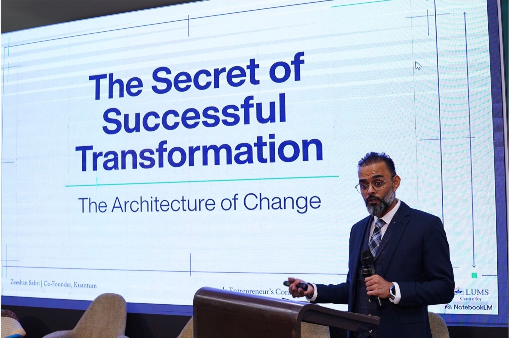
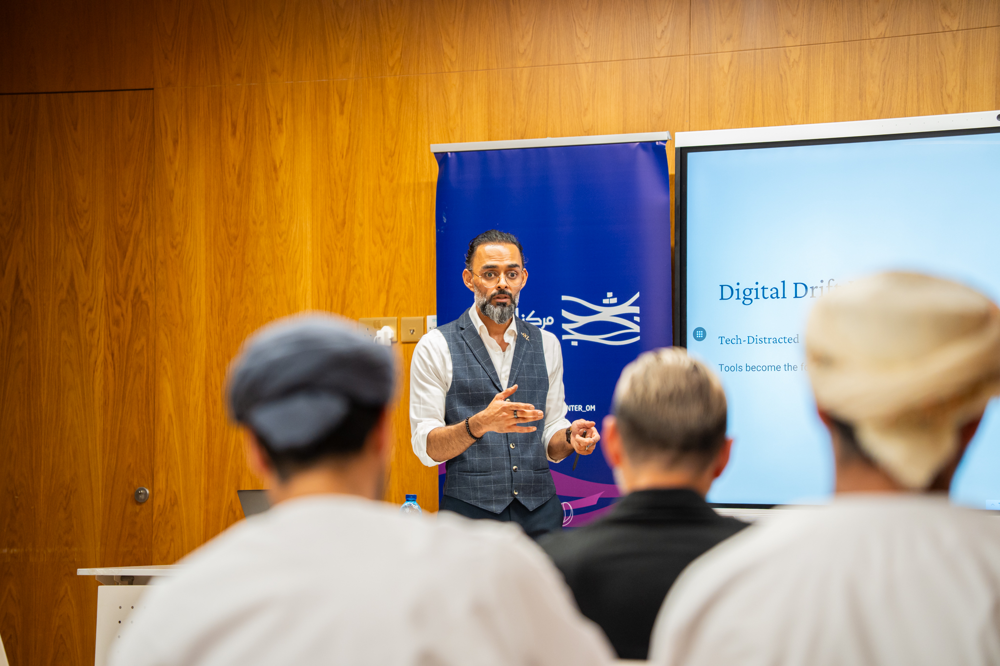
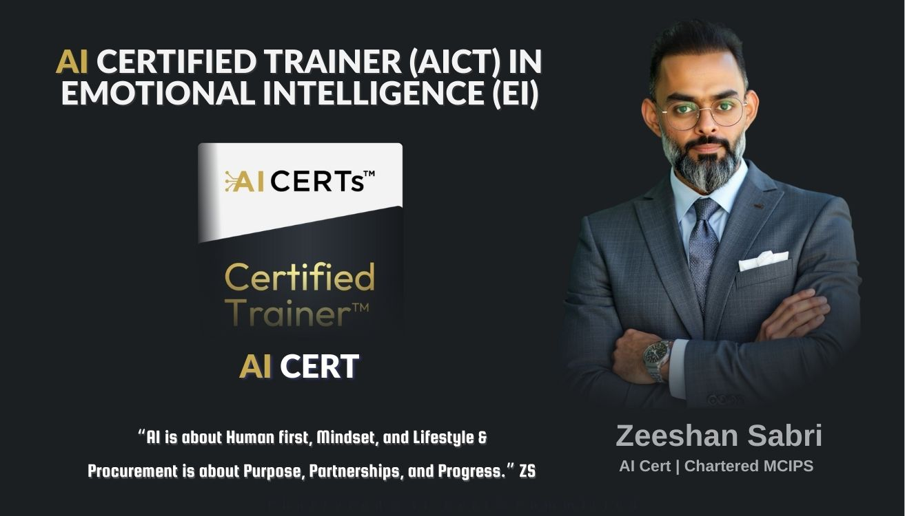
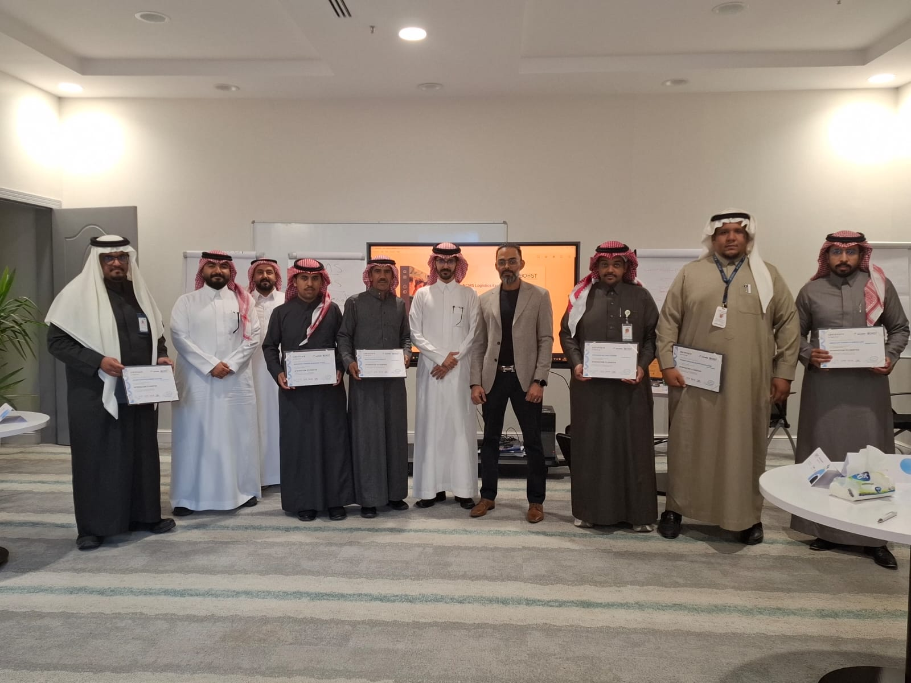

Chapter Thirteen
AI as Interpreter, Not Replacement
Becoming an AI Governance Pioneer
Audio only"Technology becomes transformation only when leaders act as interpreters."

When I became one of the first globally authorized AI Certs consulting partners, the conversation around artificial intelligence was dominated by two narratives: utopian enthusiasm and existential dread. Neither narrative was useful for the leaders I worked with — people running real organizations with real employees who needed practical guidance on how to integrate AI without destroying the culture they had spent years building.
My approach to AI governance was shaped by everything that had come before: the Pyramid Framework's insistence on tier-specific communication, the Identity Preservation Framework's focus on maintaining core values during change, and the Governance as Accelerator philosophy that treats compliance as infrastructure rather than overhead.
The Interpreter Model

The AI Governance Integration Framework is built on a single metaphor: the leader as interpreter. AI does not speak the language of organizational culture. It speaks the language of data, optimization, and efficiency. Leaders must translate between these languages — helping AI systems understand the cultural constraints of the organization, and helping the organization understand the capabilities and limitations of AI.
Words on the work
I've always found him to be a very diligent and thorough professional. He has got a strong understanding of procurement processes and an uncanny ability to find a win-win solution.
This is not a technical role. It is a cultural role. The 75% failure rate in AI integration is not a technology problem. It is a translation problem. Organizations that deploy AI with technical expertise alone achieve technical implementation. Organizations that deploy AI with cultural interpretation achieve transformation.
This insight led me to a deeper question: what sustains the translation after the consultant leaves? Diagnosis is not enough — what is missing is presence: a repeated, non-judgmental partner who reads the pattern at the moment of the emotional trigger, before the decision is made. That is the gap between AI implementation and AI transformation, and it is a gap that only human governance can fill.

90%+ Adoption Through Cultural Alignment


The results of culturally-aligned AI deployment are striking. Against the industry's widely reported failure rate, AI deployments using three-tier cultural translation achieved high adoption across 4 GCC AI initiatives. Human capability was enhanced rather than replaced, and cultural alignment was preserved in the Oman SuperJet AI integration of 2024. These outcomes reflect the quality of translation provided — not the technology deployed.
The Human Imperative
The most important lesson from AI governance work is counterintuitive: AI implementation is fundamentally a human project. The technology is the easy part. The hard part is helping people understand that AI is not coming for their jobs — it is coming for the parts of their jobs that prevent them from doing the work that actually matters. When this translation is done well, AI becomes an amplifier of human capability. When it is done poorly, it becomes a source of organizational anxiety and resistance.